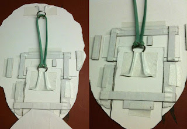

Puppet-ization* of a photograph
9/27/2010
{kind=link}
From Ted Nunes
A follow-up to the recent discussion of the puppet-ization of a photograph: I decided to make one of my sister for her birthday.
It's easy enough to cut up a photo of someone's face, but the challenge is how to create the extra space around some of the moving parts. (around the eyes and the inside of the mouth.) Having Photoshop makes this really easy. For example, I grabbed somebody's wide open mouth from a Google image search to combine into the interior and lower teeth for my sister.
But for people that don't have photo-editing software, they can take a more manual approach:
- eyes: cut out the eyes exactly around the iris and glue them to a rectangular card. (o
- eyes: cut out the eyes exactly around the iris and glue them to a rectangular card. (o
{kind=link}
ff-white is actually better--the "whites" of someone's eyes in a photo are not actually white.)
- mouth: cut out the jaw and collage it with some "donor" mouth interior, like from a magazine, or draw it by hand.
- mouth: cut out the jaw and collage it with some "donor" mouth interior, like from a magazine, or draw it by hand.
I had my puppet parts printed on card stock at a Kinko's. (when she pulled the pdf file up on her screen, the girl helping me said, "that is SO disturbing looking!") Then I backed that up to some bristol board for more thickness. (I used a glue stick for a lot of this project.) Then cut out the parts and used glue-stick, some cardboard and white artist tape to assemble.
NOTE: you want to blacken the cut edges of the eye-holes with a marker. The body was a quick, silly drawing I just cut out and taped to the cross piece that holds the jaw
{kind=link}

in place. My wire loops for hooking the rubber band were taken from a gator clip and bent up with pliers.I didn't bother with figuring out a control stick and levers. I just held it in my hand, working the mouth and eyes with my index finger.
*"Puppet-zation" coined by the author.